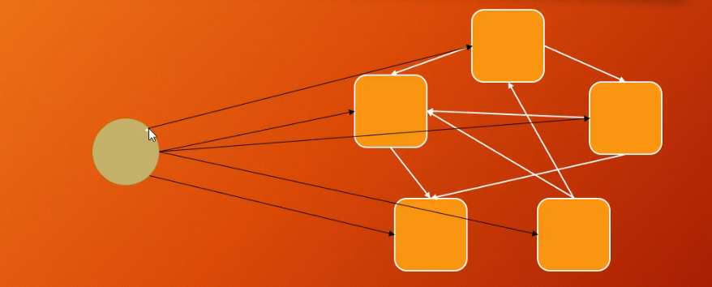

设计模式和设计原则（更新中）
创建型模式
简单/静态工厂模式
- 在简单工厂模式中，存在一个专门的工厂类，该工厂类负责根据不同的条件创建不同类型的对象。
- 客户端通过传递参数给工厂类来获取所需的对象，工厂类根据传入的参数决定创建哪种对象。
- 这种模式的主要优点是将对象的创建和使用分离，客户端不需要知道具体的创建细节。
- 缺点是如果有新类型的对象需要创建，需要修改工厂类的代码，可能违反开闭原则。
工厂方法模式
- 工厂方法模式通过定义一个创建对象的接口，但将实际的创建工作推迟到具体的子类中。
- 每个具体子类都负责创建一种特定类型的对象，从而实现了创建过程的多态性。
- 这种模式允许每个子类根据需要扩展或修改创建过程，符合开闭原则。
抽象工厂模式
抽象工厂模式包含以下几个核心角色：
- 抽象产品（Abstract Product）：定义了一组产品对象的共同接口或抽象类，描述了产品对象的公共方法。
- 具体产品（Concrete Product）：实现了抽象产品接口，定义了具体产品的特定行为和属性。
- 抽象工厂（Abstract Factory）：声明了一组用于创建产品对象的方法，每个方法对应一种产品类型。抽象工厂可以是接口或抽象类。
- 具体工厂（Concrete Factory）：实现了抽象工厂接口，负责创建具体产品对象的实例。
代码逻辑：
以创建一个系统的按钮和复选框为例，不同系统需要有自己的按钮和复选框。使用抽象工厂模式，则接口和类包括，两套工厂方法模式的接口和接口实现类，一套用于实现抽象工厂的接口和实现类，工厂类中调用前面提到的两套工厂方法模式的实现类。最后调用的是抽象工厂方法的实现类。代码示例。
按这种思路理解抽象工厂模式会比较容易，也更容易分清工厂方法模式和抽象工厂模式的区别。其实后者就是在前者的基础上，又进行了一层封装，建立了多个工厂方法的绑定关系，在这个代码示例中，是对不同系统的创建按钮的方法和创建复选框的方法进行了绑定。
建造者/生成器模式
主要解决：主要解决在软件系统中，有时候面临着”一个复杂对象”的创建工作，其通常由各个部分的子对象用一定的算法构成；由于需求的变化，这个复杂对象的各个部分经常面临着剧烈的变化，但是将它们组合在一起的算法却相对稳定。
关键代码：建造者：创建和提供实例，导演：管理建造出来的实例的依赖关系。
单例模式
单例模式的特点：
- 保证一个类只有一个实例。
- 为该实例提供一个全局访问节点。
所有单例的实现都包含以下两个相同的步骤：
- 将默认构造函数设为私有， 防止其他对象使用单例类的
new运算符。 - 新建一个静态构建方法作为构造函数。 该函数会 “偷偷” 调用私有构造函数来创建对象， 并将其保存在一个静态成员变量中。 此后所有对于该函数的调用都将返回这一缓存对象。
原型模式
原型模式（Prototype Pattern）是用于创建重复的对象，同时又能保证性能。
在 JAVA中的实现方法是：实现 Cloneable 接口，重写 clone()方法，实现克隆操作。
结构型模式
装饰器模式

组合模式
享元模式
代理模式
桥接模式
适配器模式
外观模式
行为模式
策略模式
门面模式

调停者模式
解耦

责任链模式


观察者模式

这些全是观察者：

迭代器模式
访问者模式
命令模式
模板方法模式
状态模式
备忘录模式
中介者模式
Reactor模式
软件设计七大原则
软件设计的七大原则通常指的是面向对象编程中的SOLID原则，这些原则旨在指导软件设计者编写可维护、可扩展、可复用的高质量代码。这些原则是：
- 单一职责原则（Single Responsibility Principle，SRP）： 每个类应该只有一个职责。换句话说，一个类应该只有一个引起它变化的原因。这有助于代码的模块化和可维护性。
- 开闭原则（Open-Closed Principle，OCP）： 软件实体（类、模块、函数等）应该对扩展是开放的，对修改是关闭的。意味着在不修改现有代码的情况下，通过扩展来引入新功能。
- 里氏替换原则（Liskov Substitution Principle，LSP）： 子类应该能够替换其基类，而不影响程序的正确性。子类应该保持基类的行为，并且能够在不破坏程序逻辑的情况下扩展或重写方法。
- 接口隔离原则（Interface Segregation Principle，ISP）： 不应该强迫客户端依赖于它们不需要的接口。接口应该精简，只包含客户端需要的方法。
- 依赖倒置原则（Dependency Inversion Principle，DIP）： 高层模块不应该依赖于低层模块，而是两者都应该依赖于抽象。抽象不应该依赖于具体实现，具体实现应该依赖于抽象。
- 迪米特法则（Law of Demeter，LoD）： 也称为最少知识原则。一个对象应该对其他对象有尽可能少的了解，不要与太多其他类产生耦合。每个对象应该只与其直接的朋友进行通信。
- 组合/聚合复用原则（Composition/Aggregation Reuse Principle，CARP）： 建议使用组合或聚合关系来实现代码复用，而不是通过继承。组合和聚合可以更灵活地构建对象关系，避免了类之间的紧耦合。